[using unconditional Gaussian simulation]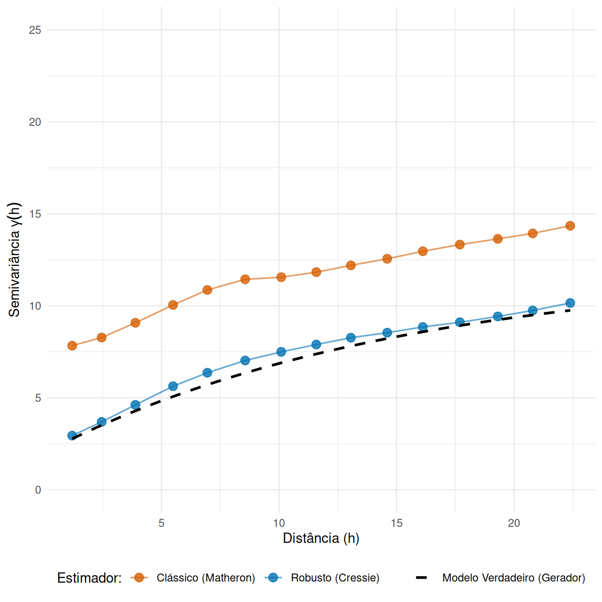
Aula 03: Teoria e Prática em R
Instituto de Matemática, Estatística e Ciência da Computação (IME‑USP)
19/01/2026
\(\Longrightarrow\) O problema das minas de ouro (década de 1950)
Danie Gerhardus Krige (D. G. Krige), engenheiro de minas sul-africano (África do Sul) estimava o teor de ouro em blocos de rocha não escavados a partir de amostras obtidas por furos de sondagem (Ecker, 2003)
O método utilizado gerava erros sistemáticos na estimativa do teor de ouro, levando à superestimação das zonas ricas e à subestimação das zonas pobres.
Causa: não era a precisão dos instrumentos utilizados e sim, o uso da estatística clássica (i.i.d.), que ignora a dependência espacial entre as amostras.
Consequência: Prejuízos financeiros devido à discrepância entre a estimativa e o recuperado (Krige; Kleingeld, 2005).
Assista ao vídeo produzido pela Federação Brasileira de Geólogos (FEBRAGEO) sobre furos de sondagem clicando aqui.
\(\Longrightarrow\) A Intuição de D.G. Krige
Uma amostra não é um valor isolado (Scalon, 2024): valores elevados indicam maior probabilidade de teores elevados nas regiões adjacentes.
Ignorar essa dependência espacial implica perder a continuidade espacial (Nhancololo et al., 2024; Oliver; Webster, 2014).
\(\Longrightarrow\) A Formalização de G. Matheron (Década de 1960):
Georges Matheron (1960s) sistematizou as ideias de D.G. Krige na Teoria das Variáveis Regionalizadas.
G. Matheron mostrou que fenômenos naturais combinam dependência espacial e aleatoriedade local, formalizando assim Geoestatística (Cressie, 1990; Matheron, 1963).
Definição: A Geoestatística modela e prediz fenômenos contínuos, onde a variável \(Y(\mathbf{s})\) é observada apenas num conjunto finito de locais \(\{\mathbf{s}_1, \dots, \mathbf{s}_n\}\) (Cressie; Moores, 2022; Myers, 1994).
Objetivo: Utilizar a estrutura de dependência espacial para inferir o comportamento da variável em locais não medidos.
Expansão: A robustez preditiva consolidou a disciplina além da mineração, abrangendo hidrologia, meteorologia e epidemiologia (Yamamoto; Landim, 2013).
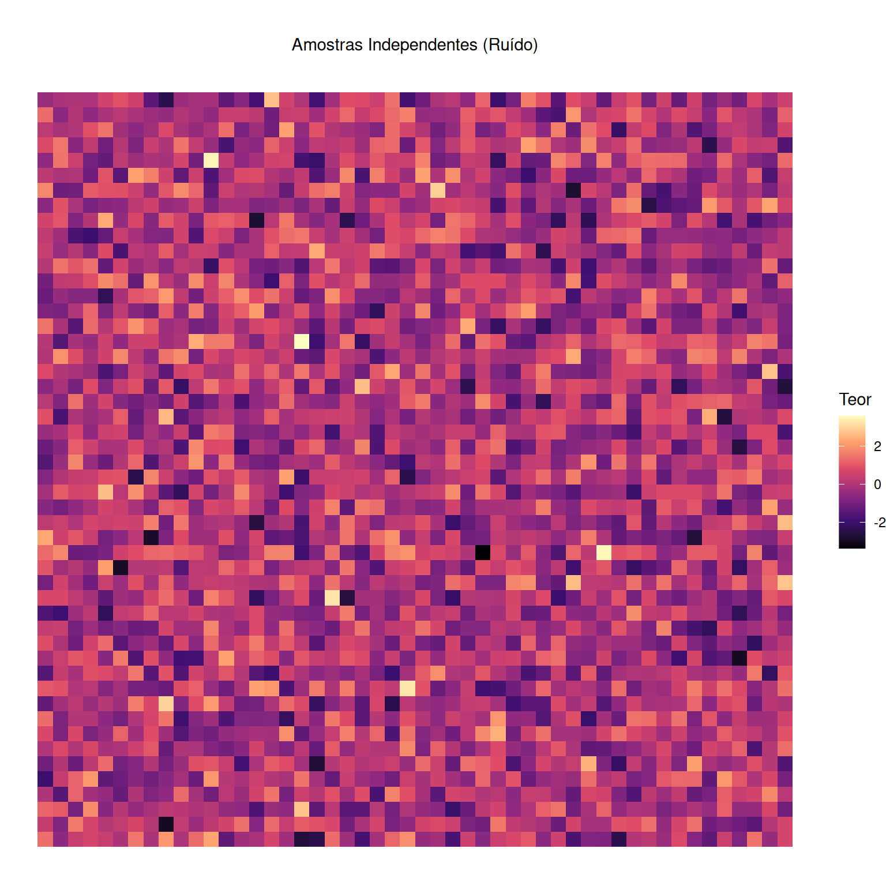
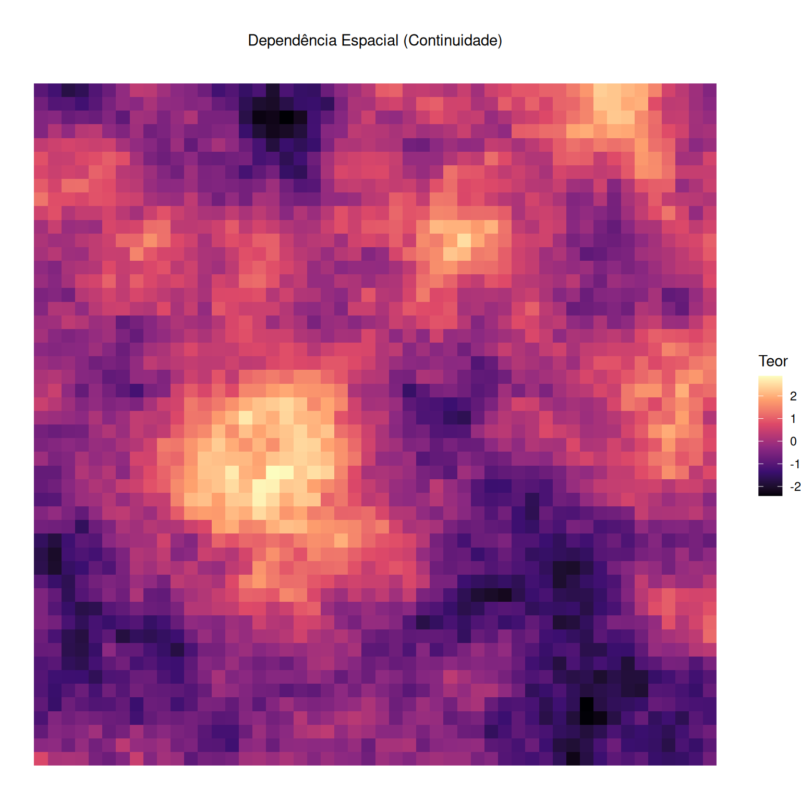
Função numérica \(f(\mathbf{s})\) que descreve a distribuição espacial de uma grandeza física (ex: teor de ouro, pH do solo) num domínio \(D^{G}\).
Possui um aspecto estruturado (tendência) e um aspecto aleatório (irregularidade local) (Matheron, 1971).
As variáveis regionalizadas são tratadas como realizações de um campo aleatório \(\{Y(s) : s \in D^{G}\}\), onde \(s\) é um vetor de coordenadas em \(\mathbb{R}^d\) (Cressie, 1991).
Coleção de variáveis aleatórias \(\{Y(\mathbf{s}) : \mathbf{s} \in D^{G}\}\) num domínio contínuo. O objetivo é reconstruir a lei de probabilidade a partir de observações finitas (Cressie, 1993).
Diferente de séries temporais (passado \(\to\) futuro), o índice espacial \(\mathbf{s}\) não possui ordenação natural em \(d \ge 2\), complexificando a modelagem da dependência (Cressie; Moores, 2022).
Para tornar o processo estocástico tratável, decompomos a variável aleatória \(Y(\mathbf{s})\) em componentes que explicam diferentes escalas de variação.
\(\Longrightarrow\) Decomposição simples:
\[Y(\mathbf{s}) = \mu(\mathbf{s}) + \delta(\mathbf{s})\]
\(\mu(\mathbf{s})\): Tendência (Trend/Drift). Variação sistemática de larga escala (função das coordenadas ou covariáveis).
\(\delta(\mathbf{s})\): Erro Estocástico. Captura a dependência espacial (correlação) com média zero.
\(\Longrightarrow\) Decomposição Estrutural Completa:
Expande o termo de erro para distinguir variabilidade natural de erro humano (Cressie, 1991; Diggle; Tawn; Moyeed, 1998):
\[Y(\mathbf{s}) = \mu(\mathbf{s}) + W(\mathbf{s}) + \eta(\mathbf{s}) + \epsilon(\mathbf{s})\]
\(\mu(\mathbf{s})\): Componente determinística (ex: gradiente de temperatura/latitude). Pode ser modelada via Krigagem (simples, ordinária, universal ou com deriva Externa).
\(W(\mathbf{s})\): Sinal espacial (\(L_2\)-contínuo). A estrutura de dependência observável na escala da amostragem.
\(\eta(\mathbf{s})\): Variação de microescala. Variabilidade intrínseca do fenômeno em distâncias menores que a amostragem (ex: variação dentro de uma pepita).
\(\epsilon(\mathbf{s})\): Ruído branco puro. Erro de medição ou laboratorial, sem realidade no fenômeno natural.
A soma das variâncias de microescala e erro (\(\eta(\mathbf{s}) + \eta(\mathbf{s})\)) constitui a descontinuidade na origem do variograma ( efeito Pepita \(c_0\)).
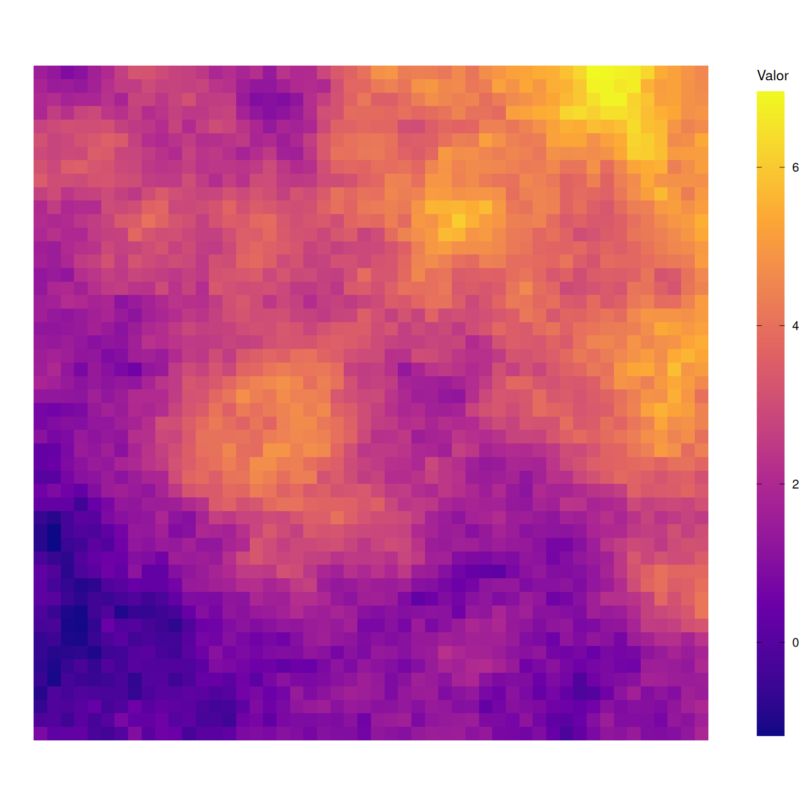
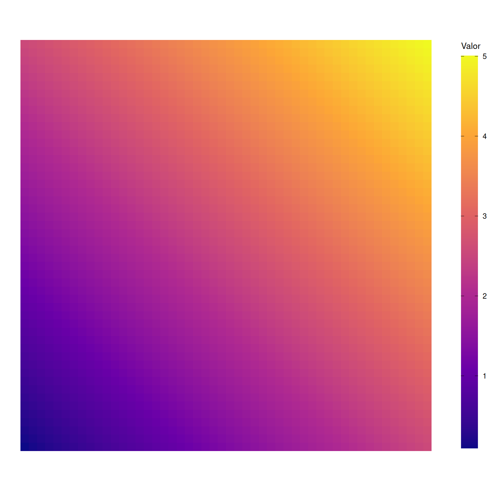
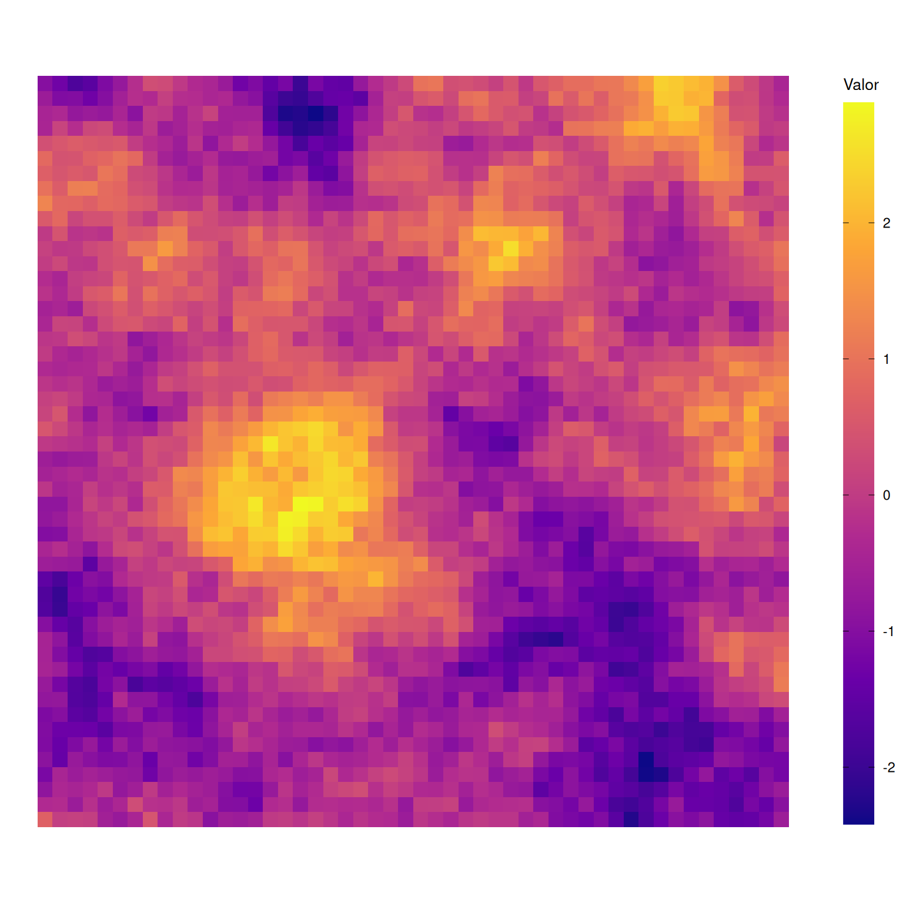
\[\mu(\mathbf{s})=E[Y(\mathbf{s})] = \int_{-\infty}^{+\infty} y \cdot f(y; \mathbf{s}) \, dy\:, \]
e variância
\[\sigma^2(\mathbf{s}) = \text{Var}(Y(\mathbf{s})) = E\left[(Y(\mathbf{s}) - \mu(\mathbf{s}))^2\right], \]
em cada local \(\mathbf{s}\) (Cressie, 1993).
Existem dois níveis principais de estacionariedade utilizados na modelação geoestatística aula 01:
Estacionaridade de \(2^a\) ordem:
\(E[Y(\mathbf{s})] = \mu, \forall \mathbf{s} \in D^G\).
\(Cov(Y(\mathbf{s}), Y(\mathbf{s}+\mathbf{h})) = E[(Y(\mathbf{s}) - \mu)(Y(\mathbf{s}+\mathbf{h}) - \mu)] = C(\mathbf{h})\)
Se o vetor de separação é nulo (\(\mathbf{h} = \mathbf{0}\)), temos: \(Cov(Y(\mathbf{s}), Y(\mathbf{s+0}))=Var(Y(\mathbf{s})) = C(\mathbf{0}) = \sigma^2\)
Esta relação (\(C(\mathbf{0}) = \sigma^2\)) estabelece que o “patamar” máximo de variabilidade do processo é fixo e conhecido a priori.
Se \(\sigma^2 \uparrow\) indefinidamente com a área, a condição \(C(\mathbf{0}) < \infty\) é violada, e a estacionariedade de segunda ordem não pode ser assumida, exigindo a adoção da hipótese intrínseca.
\[ \begin{aligned} E[Y(\mathbf{s}+\mathbf{h}) - Y(\mathbf{s})] &= 0 \\ Var(Y(\mathbf{s}+\mathbf{h}) - Y(\mathbf{s})) &= 2\gamma(\mathbf{h}) \end{aligned} \]
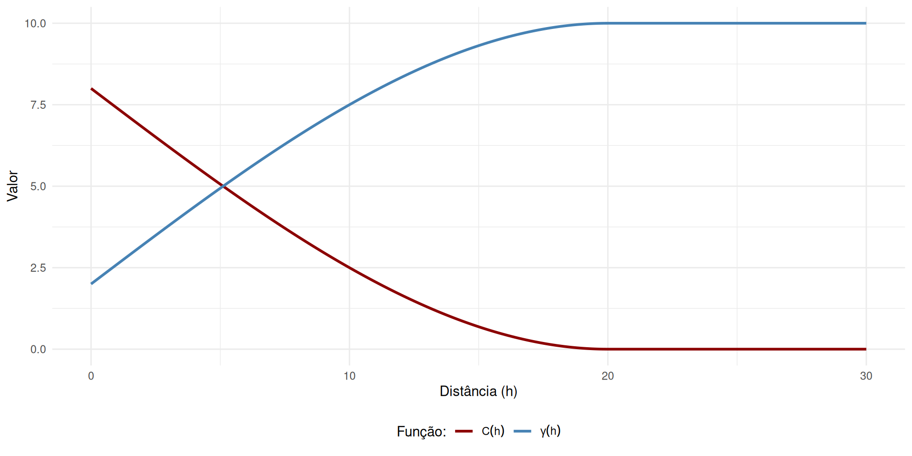
Figura 3: Covariância vs. Semivariograma em Processo Estacionário.
Quantifica a covariância linear entre \(Y(\mathbf{s})\) e \(Y(\mathbf{s} + \mathbf{h})\). Sob estacionariedade de segunda ordem: \(C(\mathbf{h}) = E[(Y(\mathbf{s}) - \mu)(Y(\mathbf{s} + \mathbf{h}) - \mu)]\)
\(C(\mathbf{h}) = C(-\mathbf{h})\).
\(C(\mathbf{0}) = \sigma^2\) (Variância a priori).
Assume que a variância global é finita e constante.
Não pode ser definida para processos com variância infinita (ex: movimento Browniano, onde a dispersão cresce com o domínio \(|D| \to \infty\)).
Para lidar com fenômenos onde a variância pode não ser finita, Matheron introduziu a Hipótese Intrínseca, focada na estacionariedade dos incrementos.
\[2\gamma(\mathbf{h}) = Var(Y(\mathbf{s} + \mathbf{h}) - Y(\mathbf{s})) = E[(Y(\mathbf{s} + \mathbf{h}) - Y(\mathbf{s}))^2]\]
O Semivariograma é definido como \(\gamma(\mathbf{h})\) (metade do variograma).
É mais robusto que a covariância, pois os incrementos permanecem finitos mesmo se a variância global divergir.
Se a variância for finita (2ª ordem), existe a relação: \(\gamma(\mathbf{h}) = C(0) - C(\mathbf{h})\).
Para a modelagem teórica, é crucial identificar os parâmetros que condicionam a predição espacial:
Alcance (Range, \(a\)): Distância \(\|\mathbf{h}\|\) onde a correlação espacial se torna desprezível.
Pontos separados por distâncias \(\ge a\) são estatisticamente independentes.
Define a malha de amostragem necessária.
Efeito Pepita (Nugget, \(C_0\)): Descontinuidade na origem (\(\gamma(\mathbf{0}) \to C_0\)).
Contribuição (Partial Sill, \(C\)): Variância explicada pela estrutura espacial.
Diferença entre o Patamar e o Efeito Pepita.
Quanto maior \(C\) em relação a \(C_0\), mais forte é a continuidade espacial.
Patamar (Sill, \(C_0 + C\)): Valor assintótico onde a função estabiliza.
Teoricamente igual à variância total do processo (\(\sigma^2 = C(\mathbf{0})\)).
\(\text{Patamar} = \text{Pepita} + \text{Contribuição}\).
Nota
Se o variograma não estabilizar, o processo pode não ter variância finita ou conter uma tendência (drift) não removida.
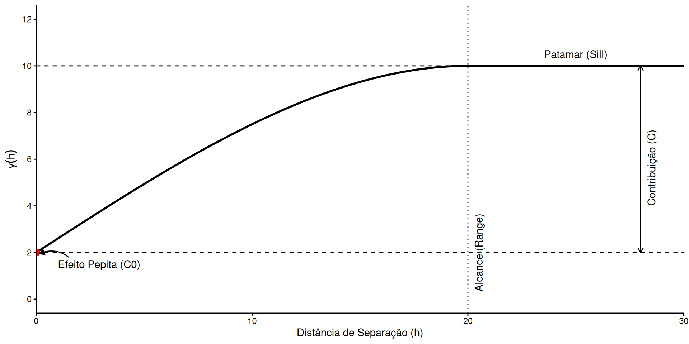
Figura 4: Elementos do Semivariograma: Alcance, patamar, efeito pepita e contribuição.
A definição teórica \(2\gamma(\mathbf{h})\) pressupõe o conhecimento da distribuição conjunta do processo.
Dispomos apenas de uma única realização finita \(\mathbf{y} = \{y(\mathbf{s}_1), \dots, y(\mathbf{s}_n)\}\).
A função teórica é desconhecida e deve ser estimada empiricamente.
A qualidade do variograma experimental é crítica, pois alimenta o modelo de ajuste para a Krigagem.
Existem diferentes estimadores para lidar com a qualidade dos dados (com e sem outliers).
\[\hat{\gamma}_{M}(\mathbf{h}) = \frac{1}{2|N(\mathbf{h})|} \sum_{(\mathbf{s}_i, \mathbf{s}_j) \in N(\mathbf{h})} (y(\mathbf{s}_i) - y(\mathbf{s}_j))^2\]
\(N(\mathbf{h})\): Conjunto de pares separados pelo vetor \(\mathbf{h}\).
\(|N(\mathbf{h})|\): Número de pares.
É sensível a outliers. Como as diferenças são elevadas ao quadrado, um único erro grosseiro pode inflar a variância estimada.
Desenvolvido por Cressie; Hawkins (1980) para mitigar o impacto de contaminação nos dados e distribuições de cauda longa.
\[\hat{\gamma}_{CH}(\mathbf{h}) = \frac{\left( \frac{1}{|N(\mathbf{h})|} \sum_{(\mathbf{s}_i, \mathbf{s}_j) \in N(\mathbf{h})} |y(\mathbf{s}_i) - y(\mathbf{s}_j)|^{1/2} \right)^4}{0.457 + \frac{0.494}{|N(\mathbf{h})|}}\]
Utiliza a raiz quadrada das diferenças para suavizar extremos.
O denominador atua como fator de correção de viés para amostras finitas.
Recomendado quando há suspeita de não-normalidade severa ou erros de medição.
[using unconditional Gaussian simulation]
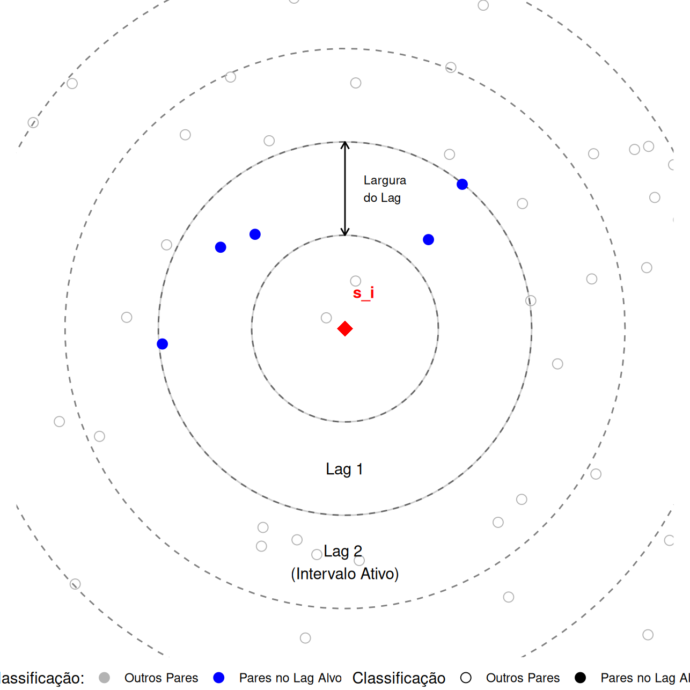
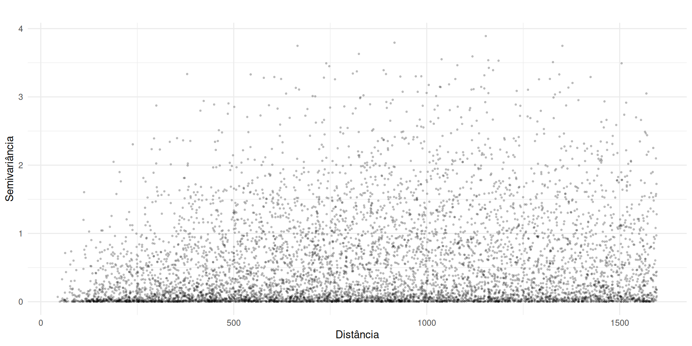
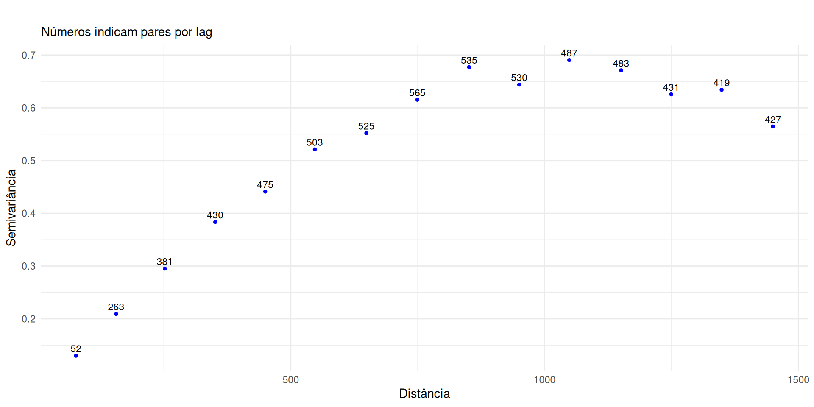
O variograma experimental fornece apenas estimativas pontuais discretas \(\hat{\gamma}(\mathbf{h}_k)\).
A Krigagem exige o valor de \(\gamma(\mathbf{h})\) para qualquer distância \(\mathbf{h}\) no domínio.
Por que não interpolar? Uma simples ligação de pontos (splines/linear) não garante que a variância de estimativa seja não-negativa (\(\sigma_E^2 \ge 0\)).
A função deve ser condicionalmente negativa definida (para o variograma) ou positiva definida (para covariância) (Matheron, 1971).
A Solução: Ajustar um modelo teórico paramétrico \(\gamma(\mathbf{h}; \boldsymbol{\theta})\) onde estimamos \(\boldsymbol{\theta} = (C_0, C, a)\).
É o modelo mais intuitivo. Descreve fenômenos com uma transição clara entre dependência e independência.
Comportamento: Crescimento quase linear na origem.
Alcance: Atinge o patamar exatamente na distância \(a\).
\[\gamma(h) = \begin{cases} C_0 + C \left( \frac{3h}{2a} - \frac{1}{2}\left(\frac{h}{a}\right)^3 \right) & \text{se } 0 < h \le a \\ C_0 + C & \text{se } h > a \end{cases}\]
Descreve continuidade mais suave, comum em fenômenos ambientais (ex: dispersão de poluentes).
Comportamento: Crescimento rápido na origem, mas assintótico.
Alcance Prático (\(a'\)): Nunca atinge o patamar matematicamente. O parâmetro \(a\) é apenas uma escala.
Define-se o alcance prático como a distância onde atinge 95% do patamar: \(a' \approx 3a\)
\[\gamma(h) = C_0 + C(1 - \exp(-h/a))\]
Representa fenômenos extremamente regulares e infinitamente diferenciáveis.
Comportamento: Parabólico na origem (\(h^2\)). Variação muito suave a curtas distâncias.
Alcance prático: Assintótico. \(a' \approx \sqrt{3}a\).
Alerta crítico: Usar este modelo sem efeito pepita (\(C_0 = 0\)) causa instabilidade numérica (matriz singular) e artefatos na predição (Wackernagel, 2003).
\[\gamma(h) = C_0 + C(1 - \exp(-h^2/a^2))\]
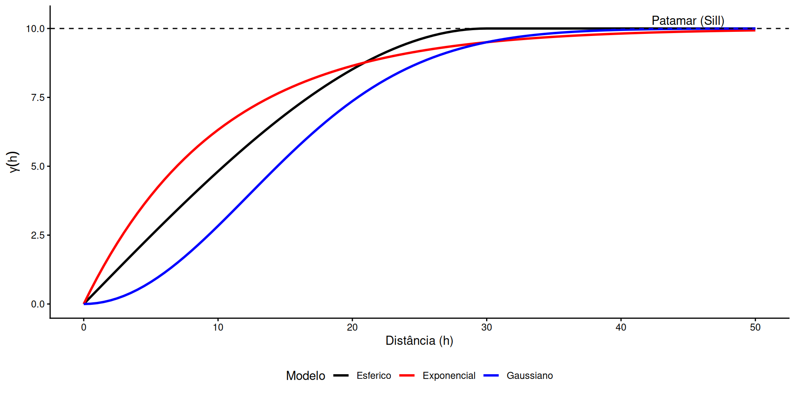
Figura 8: Comparação dos Modelos Teóricos: O Esférico (linear na origem) atinge o patamar abruptamente. O Exponencial sobe rápido mas estabiliza lentamente (assintótico). O Gaussiano (parabólico na origem) representa fenômenos muito suaves.
Por que escolher a família Matérn?
Guttorp; Gneiting (2006) argumentam que esta família deve ser preferida por unificar as abordagens anteriores.
Modelos clássicos impõem uma suavidade fixa (Exponencial é rugoso, Gaussiano é muito suave).
Introdução de um parâmetro de forma \(\nu\) (suavidade).
O modelo permite que os próprios dados ditem o grau de diferenciabilidade do campo aleatório \(Y(\mathbf{s})\) (Sahu, 2022).
A função transita entre as formas exponencial e gaussiana de acordo com \(\nu\):
\[\gamma(h) = C_0 + C \left[ 1 - \frac{1}{2^{\nu-1}\Gamma(\nu)} \left(\frac{2\sqrt{\nu} \cdot h}{a}\right)^\nu K_\nu\left(\frac{2\sqrt{\nu} \cdot h}{a}\right) \right]\]
\(C\) (Contribuição): Variância estrutural.
\(a\) (Alcance): Parâmetro de escala da distância.
\(\nu\) (Suavidade): Parâmetro crítico.
Se \(\nu = 0.5 \to\) Modelo Exponencial.
Se \(\nu \to \infty \to\) Modelo Gaussiano.
\(K_\nu(\cdot)\): Função de Bessel modificada de 2ª espécie (garante validade multidimensional).
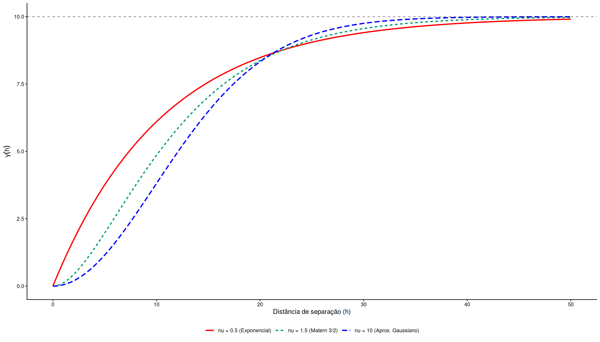
Figura 9: A Família Matérn e a Flexibilidade de Suavidade (nu). O parâmetro nu controla o comportamento na origem: nu=0.5 recupera o modelo Exponencial, enquanto nu elevados aproximam-se do Gaussiano.
Hipótese de Isotropia (Ideal): A dependência espacial depende apenas da distância \(\|\mathbf{h}\|\). As isolinhas do variograma formam círculos.
Realidade (Anisotropia): Processos geológicos (sedimentação, fluxo de água, vento) criam direções preferenciais de continuidade.
Processo anisotropico
Def: A variabilidade espacial muda com a direção.
Modelagem: Não requer novas funções, mas sim transformações lineares do sistema de coordenadas (Mapeamento Anisotrópico \(\to\) Isotrópico).
Tipos: Geométrica, Zonal e Mista (Yamamoto; Landim, 2013).
Ocorre quando o Alcance (\(a\)) varia com a direção, mas o Patamar é constante.
Isolinhas: Formam elipses.
Parâmetros:
\(a_{max}\): Alcance na direção de maior continuidade.
\(a_{min}\): Alcance na direção de menor continuidade.
\(\phi\): Ângulo (azimute) do eixo maior.
\(\lambda = a_{max} / a_{min}\): Razão de anisotropia.
A transformação (\(\mathbf{h}' = \mathbf{A}\mathbf{h}\)):
Rotação (\(\mathbf{R}\)): Alinha os eixos com a direção \(\phi\).
Escalonamento (\(\mathbf{S}\)): Comprime o eixo maior (\(1/\lambda\)).
Ocorre quando o Patamar (variância total) varia consoante a direção.
Desafia a hipótese de estacionariedade (covariância na origem não única).
Variabilidade vertical muito superior à horizontal (ex: estratificação de solos).
Estruturas Aninhadas (Journel; Huijbregts, 1976).
\[\gamma(\mathbf{h}) = \gamma_{iso}(\|\mathbf{h}\|) + \gamma_{zonal}(|h_z|)\]
\(\gamma_{zonal}\) depende apenas da distância vertical.
Na horizontal (\(h_z=0\)), o patamar é menor.
Reflete camadas onde propriedades persistem lateralmente por longas distâncias (alcance horizontal \(\to \infty\)).
Generalização para sistemas complexos com múltiplas escalas de variação.
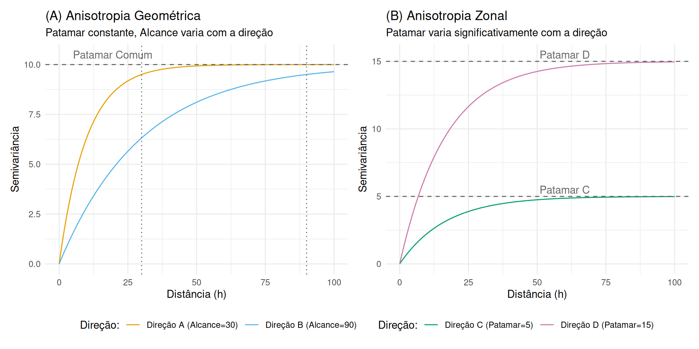
Figura 10: Tipos de Anisotropia. (A) Geométrica: mesmo patamar, alcances diferentes. (B) Zonal: alcances similares, patamares diferentes.
Para garantir a precisão da Krigagem, devemos diagnosticar a dependência direcional.
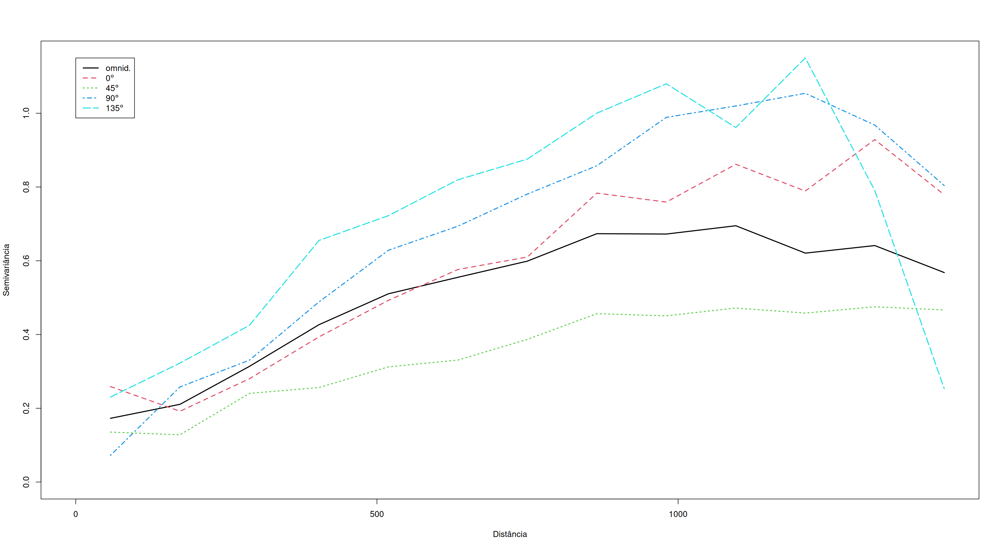
O Objetivo: estimar o vetor de parâmetros (\(\boldsymbol{\theta}=(c_0, C_0 + C, a, \nu)\) do variograma teórico \((2\gamma(\mathbf{h};\boldsymbol{\theta}))\).
\(\Longrightarrow\) Métodos baseados no variograma experimental
Mínimos Quadrados Ponderados (WLS): Os estimadores do variograma têm variância heterocedástica. A variância do estimador cresce com o valor do próprio variograma.
Mínimos Quadrados Generalizados (GLSE): WLS assume que as estimativas em diferentes lags são independentes. Na realidade, \(\text{Cov}(\hat{\gamma}(\mathbf{h}_i), \hat{\gamma}(\mathbf{h}_j)) \neq 0\).
\(\Longrightarrow\) Métodos baseados nos Dados:
Máxima Verossimilhança (ML): Ajusta o modelo diretamente aos dados brutos \(\mathbf{y}\).
Máxima Verossimilhança Restrita (REML): ML subestima variância (viés) por assumir que \(\boldsymbol{\beta}\) é conhecida, ignorando os g.l perdidos na sua estimação. REML corrige o viés.
REML Robusto: Mitiga a influência de outliers na estimação (ver notas de aula).
Cont…
\[\begin{aligned} \text{Var}[\hat{\gamma}(\mathbf{h})] &= \text{Var}\left[ \frac{1}{2 N(\mathbf{h})} \sum_{i=1}^{N(\mathbf{h})} (Y(\mathbf{s}_i) - Y(\mathbf{s}_j))^2 \right] \\ &= \frac{1}{4 [N(\mathbf{h})]^2} \sum_{i=1}^{N(\mathbf{h})} \underbrace{\text{Var}\left[ (Y(\mathbf{s}_i) - Y(\mathbf{s}_j))^2 \right]}_{8[\gamma(\mathbf{h})]^2} \\ &= \frac{1}{4 [N(\mathbf{h})]^2} \cdot N(\mathbf{h}) \cdot 8[\gamma(\mathbf{h})]^2 = \frac{2[\gamma(\mathbf{h})]^2}{N(\mathbf{h})} \\ w(\mathbf{h}) &\propto \frac{1}{\text{Var}[\hat{\gamma}(\mathbf{h})]} = \frac{N(\mathbf{h})}{[\gamma(\mathbf{h}; \boldsymbol{\theta})]^2} \\ \hat{\boldsymbol{\theta}}_{WLS} &= \arg \min_{\boldsymbol{\theta}} \sum_{k=1}^{K} \frac{|N(\mathbf{h}_k)|}{[\gamma(\mathbf{h}_k; \boldsymbol{\theta})]^2} \left[ \hat{\gamma}(\mathbf{h}_k) - \gamma(\mathbf{h}_k; \boldsymbol{\theta}) \right]^2\\ \hat{\boldsymbol{\theta}}_{WLS} &= \arg \min_{\boldsymbol{\theta}} \sum_{k=1}^{K} w(\mathbf{h}_k) \left[ \hat{\gamma}(\mathbf{h}_k) - \gamma(\mathbf{h}_k; \boldsymbol{\theta}) \right]^2, \quad w(\mathbf{h}_k) = \frac{|N(\mathbf{h}_k)|}{[\gamma(\mathbf{h}_k; \boldsymbol{\theta})]^2} \end{aligned}\]Cont …
Numerador \(|N(\mathbf{h})|\): Dá mais peso a lags com muitos pares (mais confiáveis).
Denominador \([\gamma(\mathbf{h})]^2\): Penaliza fortemente erros em distâncias curtas (onde \(\gamma\) é pequeno).
Garante um ajuste preciso na origem, crucial para a estabilidade da Krigagem.
Construção do Sistema GLSE
Monte a matriz de covariância \(\boldsymbol{\Sigma}_{\hat{\gamma}}(\boldsymbol{\theta}) \text{ de dimensão} K \times K \text{ usando os elementos } [\boldsymbol{\Sigma}_{\hat{\gamma}}]_{uv} \text{ calculados acima.}\)
Defina \(\hat{\boldsymbol{\gamma}} = [\hat{\gamma}(\mathbf{h}_1) \dots \hat{\gamma}(\mathbf{h}_K)]^\top \quad \text{e} \quad \boldsymbol{\gamma}(\boldsymbol{\theta}) = [\gamma(\mathbf{h}_1; \boldsymbol{\theta}) \dots \gamma(\mathbf{h}_K; \boldsymbol{\theta})]^\top\)
\(\hat{\boldsymbol{\theta}}_{GLSE} = \arg \min_{\boldsymbol{\theta}} (\hat{\boldsymbol{\gamma}} - \boldsymbol{\gamma}(\boldsymbol{\theta}))^\top [\boldsymbol{\Sigma}_{\hat{\gamma}}(\boldsymbol{\theta})]^{-1} (\hat{\boldsymbol{\gamma}} - \boldsymbol{\gamma}(\boldsymbol{\theta}))\)
Cont …
\[\begin{aligned} \text{Max. em relação a } \boldsymbol{\beta}: & \quad \frac{\partial L}{\partial \boldsymbol{\beta}} = \mathbf{X}^\top \mathbf{V}^{-1} (\mathbf{y} - \mathbf{X}\boldsymbol{\beta}) = 0 \\ \mathbf{X}^\top \mathbf{V}^{-1} \mathbf{y} &= (\mathbf{X}^\top \mathbf{V}^{-1} \mathbf{X}) \boldsymbol{\beta} \\ \hat{\boldsymbol{\beta}}_{GLS} &= (\mathbf{X}^\top \mathbf{V}(\boldsymbol{\theta})^{-1} \mathbf{X})^{-1} \mathbf{X}^\top \mathbf{V}(\boldsymbol{\theta})^{-1} \mathbf{y} \\ \mathbf{res} &= \mathbf{y} - \mathbf{X}\hat{\boldsymbol{\beta}}_{GLS} \\ L_{ML}(\boldsymbol{\theta}) &= -\frac{n}{2}\ln(2\pi) - \frac{1}{2}\ln|\mathbf{V}(\boldsymbol{\theta})| - \frac{1}{2} \mathbf{res}^\top \mathbf{V}(\boldsymbol{\theta})^{-1} \mathbf{res} \\ -2L_{ML}(\boldsymbol{\theta}) &\propto \ln|\mathbf{V}(\boldsymbol{\theta})| + (\mathbf{y} - \mathbf{X}\hat{\boldsymbol{\beta}}_{GLS})^\top \mathbf{V}(\boldsymbol{\theta})^{-1} (\mathbf{y} - \mathbf{X}\hat{\boldsymbol{\beta}}_{GLS}) \end{aligned}\]Em \((\mathbf{y}\mid\mathbf{X}\boldsymbol{\beta}\sim\mathcal{N}(\mathbf{X}\boldsymbol{\beta},\mathbf{V}(\boldsymbol{\theta})))\), a tendência \((\mathbf{X}\boldsymbol{\beta})\) introduz viés; elimina-se \((\boldsymbol{\beta})\) usando contrastes (combinação linear das observações construída para eliminar certos efeitos) de erro \((\mathbf{w}=\mathbf{K}^\top\mathbf{y})\), com \((\mathbf{K}^\top\mathbf{X}=\mathbf{0})\).
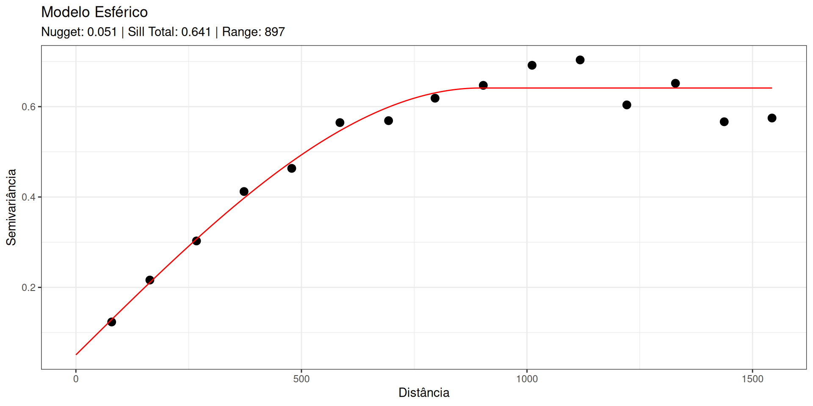
Figura 11: Ajuste do modelo teórico sobre o experimental usando WLS
A predição espacial visa estimar o valor da variável \(Y(\mathbf{s}_0)\) num local não amostrado \(\mathbf{s}_0\), baseando-se nos vizinhos observados.
\(\Longrightarrow\) Krigagem (BLUE): Melhor Estimador Linear Não Viciado.
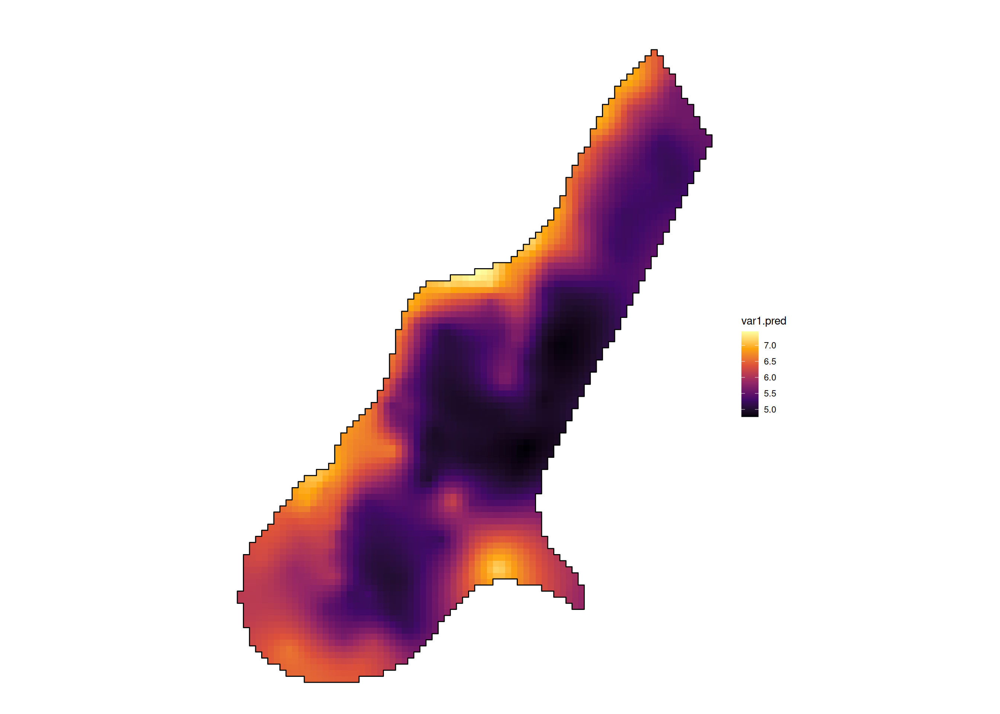
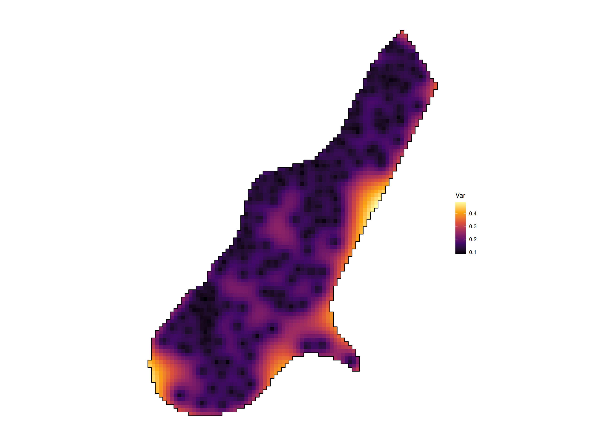
Média \(E[Y(\mathbf{s})] = \mu\) é constante mas desconhecida.
O estimador é uma combinação linear direta: \(\hat{Y}_{KO}(\mathbf{s}_0) = \sum_{i=1}^n \lambda_i Y(\mathbf{s}_i)\)
Cont …
\[\begin{aligned} \small \frac{\partial L}{\partial \nu} &= 2 \left( \sum_{i=1}^n \lambda_i - 1 \right) = 0 \implies \sum_{i=1}^n \lambda_i = 1 \\ \sigma_{KO}^2 &= \sum_{i=1}^n \lambda_i \underbrace{\left( \sum_{j=1}^n \lambda_j C_{ij} \right)}_{C_{i0} - \nu} + C(0) - 2 \sum_{i=1}^n \lambda_i C_{i0} \\ &= \sum_{i=1}^n \lambda_i C_{i0} - \nu \underbrace{\sum_{i=1}^n \lambda_i}_{1} + C(0) - 2 \sum_{i=1}^n \lambda_i C_{i0} \\ &= C(0) - \sum_{i=1}^n \lambda_i C_{i0} - \nu \\ & \text{ ou } \sigma_{KO}^2 = \sum_{i=1}^n \lambda_i \gamma(\mathbf{s}_i - \mathbf{s}_0) + \nu \end{aligned}\]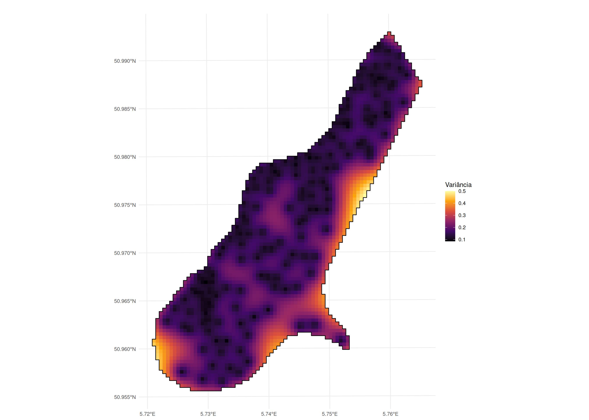
Cont …
\[\begin{aligned} L(\boldsymbol{\lambda}, \boldsymbol{\nu})&= \sum_{i=1}^n\sum_{j=1}^n \lambda_i\lambda_j C_{ij} - 2\sum_{i=1}^n \lambda_i C_{i0} + C_{00} - 2\sum_{l=0}^L \nu_l\left(\sum_{i=1}^n \lambda_i f_{il} - f_{0l}\right)\\ \frac{\partial L}{\partial \lambda_k} &= 2\sum_{j=1}^n \lambda_j C_{kj} - 2C_{k0} - 2\sum_{l=0}^L \nu_l f_{kl} = 0, \:\implies \sum_{j=1}^n \lambda_j C_{kj} - \sum_{l=0}^L \nu_l f_l(\mathbf{s}_k) = C_{k0} \\ \frac{\partial L}{\partial \nu_l} &= -2\left(\sum_{i=1}^n \lambda_i f_l(\mathbf{s}_i) - f_l(\mathbf{s}_0)\right) = 0, \: \implies \sum_{i=1}^n \lambda_i f_l(\mathbf{s}_i) = f_l(\mathbf{s}_0)\\ \sigma_{KU}^2 &= C_{00} - \sum_{i=1}^n \lambda_i C_{i0} + \sum_{l=0}^L \nu_l f_l(\mathbf{s}_0) \end{aligned}\]Se \(L=0\) (apenas \(f_0(\mathbf{s})=1\)) temos Krigagem Ordinária.
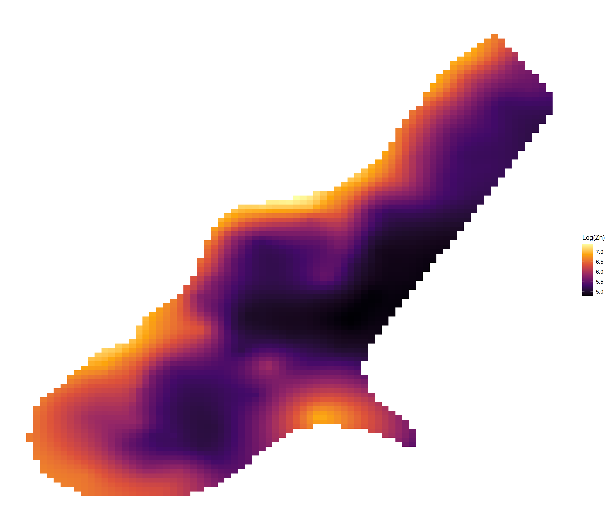
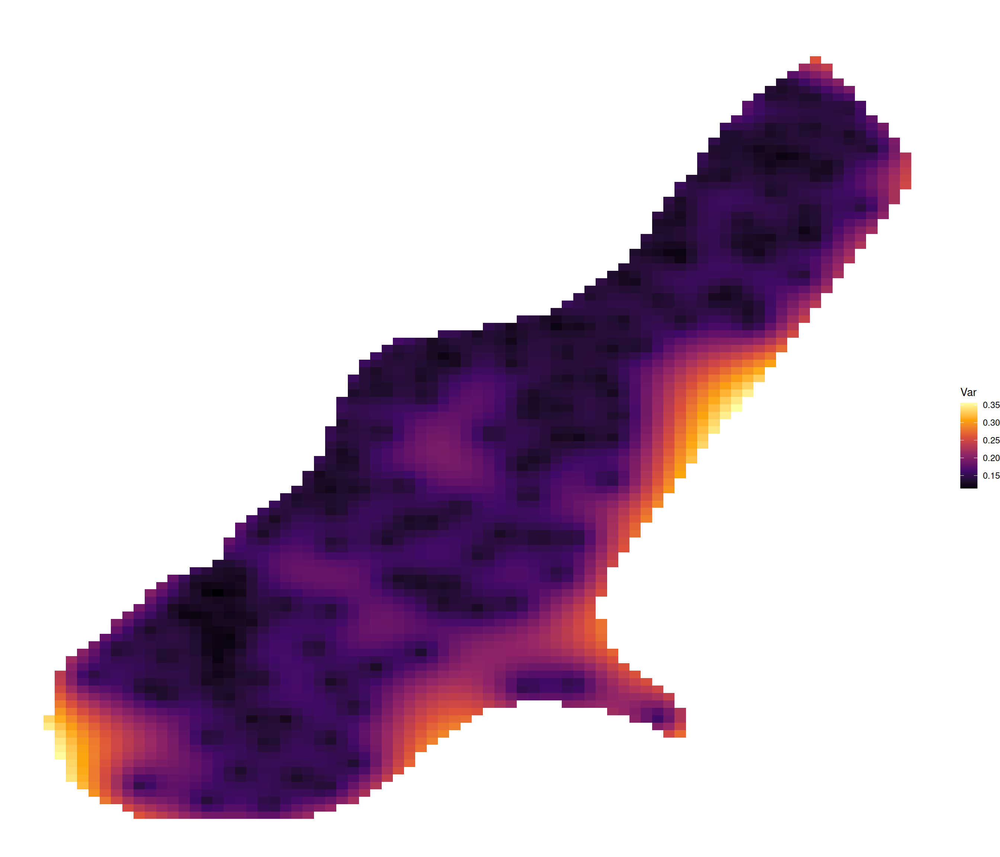
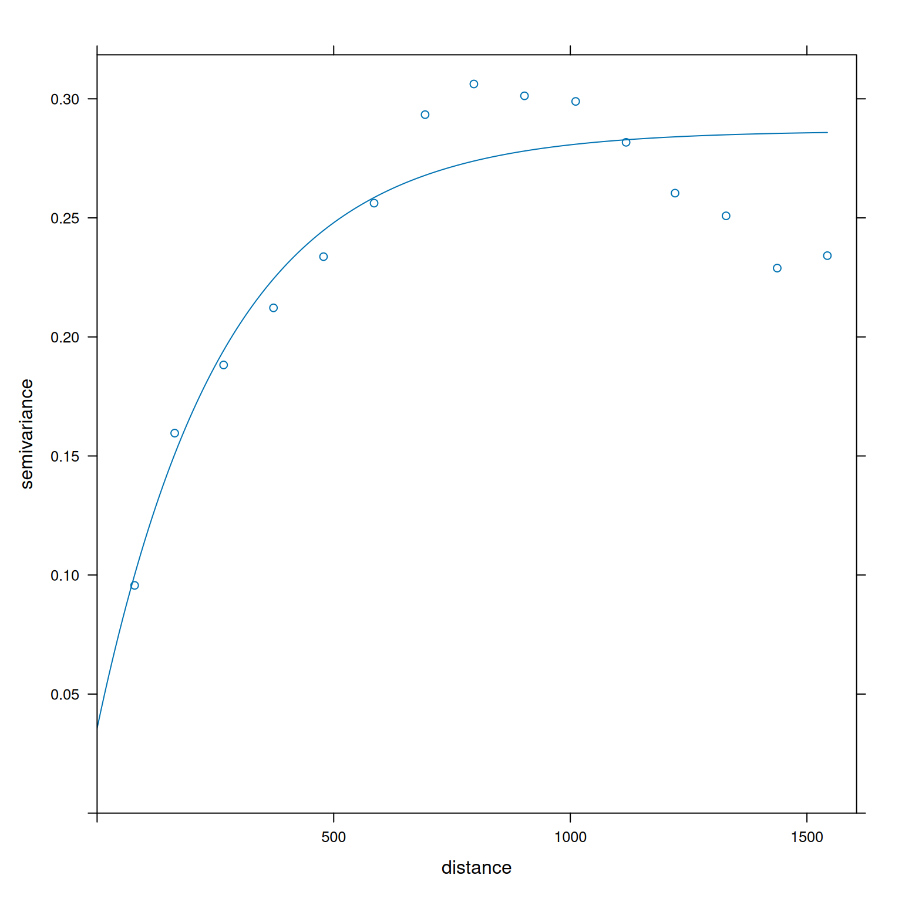
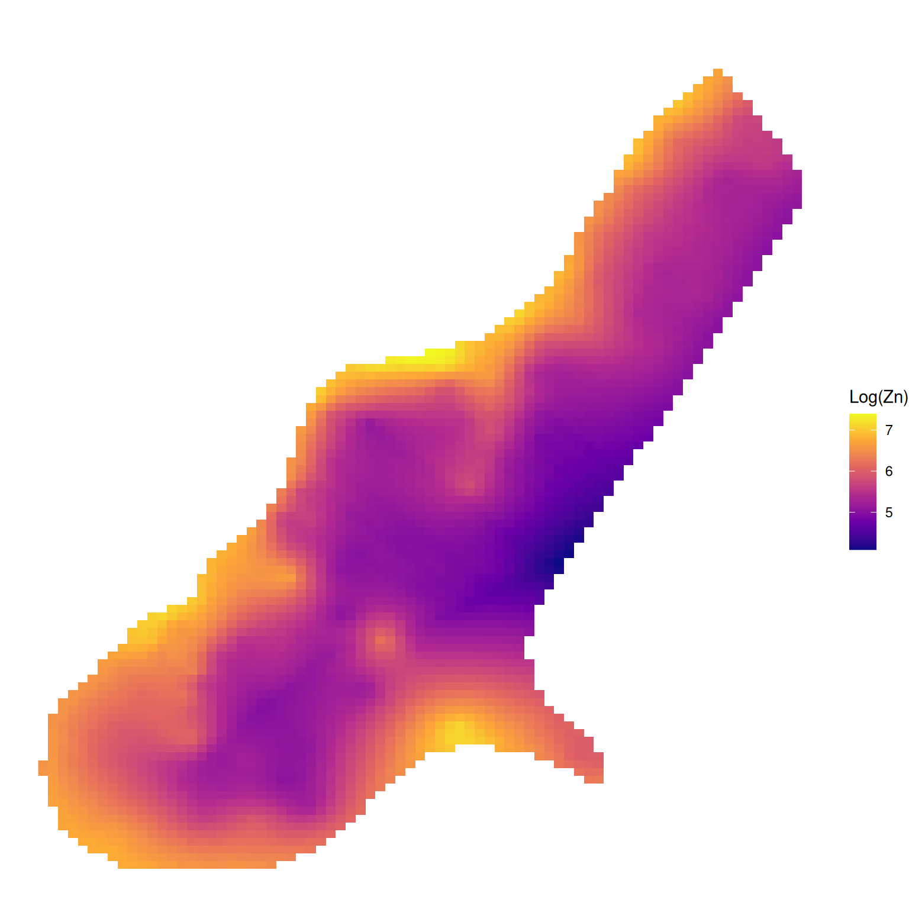
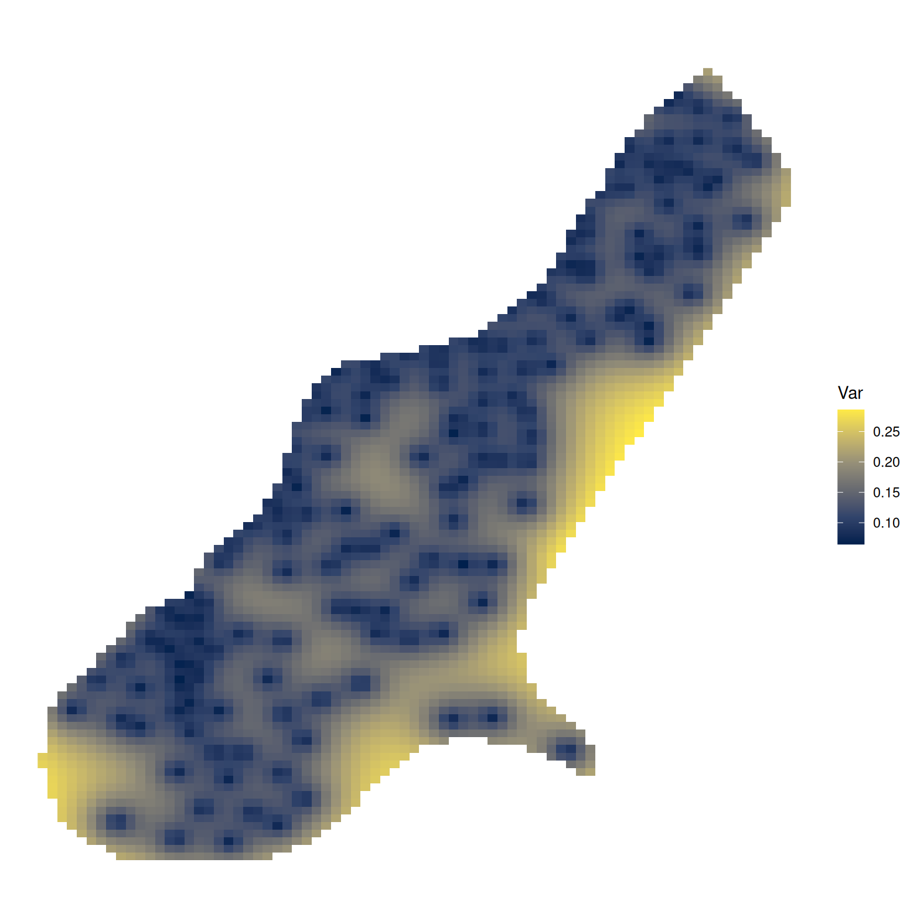
Usada para estimação de uma variável primária \(Y_1\) usando sua própria autocorrelação e a correlação cruzada com variáveis secundárias \(Y_2 \dots Y_k\) (Co-regionalização).
\[\begin{aligned} \quad Y_1(\mathbf{s}) &= \mu_1 + \delta_1(\mathbf{s}), \:Y_2(\mathbf{s}) = \mu_2 + \delta_2(\mathbf{s}), \: \: \text{Cov}(\delta_a(\mathbf{s}_i), \delta_b(\mathbf{s}_j)) = C_{ab}(\mathbf{s}_i, \mathbf{s}_j) \\ \quad \hat{Y}_1(\mathbf{s}_0) &= \sum_{i=1}^{n_1} \lambda_{1i} Y_1(\mathbf{s}_{1i}) + \sum_{j=1}^{n_2} \lambda_{2j} Y_2(\mathbf{s}_{2j})\\ E[\hat{Y}_1 - Y_1] &= \mu_1\left(\sum \lambda_{1i} - 1\right) + \mu_2 \sum \lambda_{2j} = 0, \: \: \text{Restrições:} \:\sum_{i=1}^{n_1} \lambda_{1i} = 1 \: \text{e} \: \sum_{j=1}^{n_2} \lambda_{2j} = 0\\ \sigma_E^2 &= \sum_{i}\sum_{k} \lambda_{1i}\lambda_{1k} C_{11}(\mathbf{s}_{1i}, \mathbf{s}_{1k}) + \sum_{j}\sum_{l} \lambda_{2j}\lambda_{2l} C_{22}(\mathbf{s}_{2j}, \mathbf{s}_{2l}) +\\ &\quad +2\sum_{i}\sum_{j} \lambda_{1i}\lambda_{2j} C_{12}(\mathbf{s}_{1i}, \mathbf{s}_{2j}) \\ &\quad - 2\sum_{i} \lambda_{1i} C_{11}(\mathbf{s}_{1i}, \mathbf{s}_0) - 2\sum_{j} \lambda_{2j} C_{12}(\mathbf{s}_{2j}, \mathbf{s}_0) + C_{11}(0) \end{aligned}\]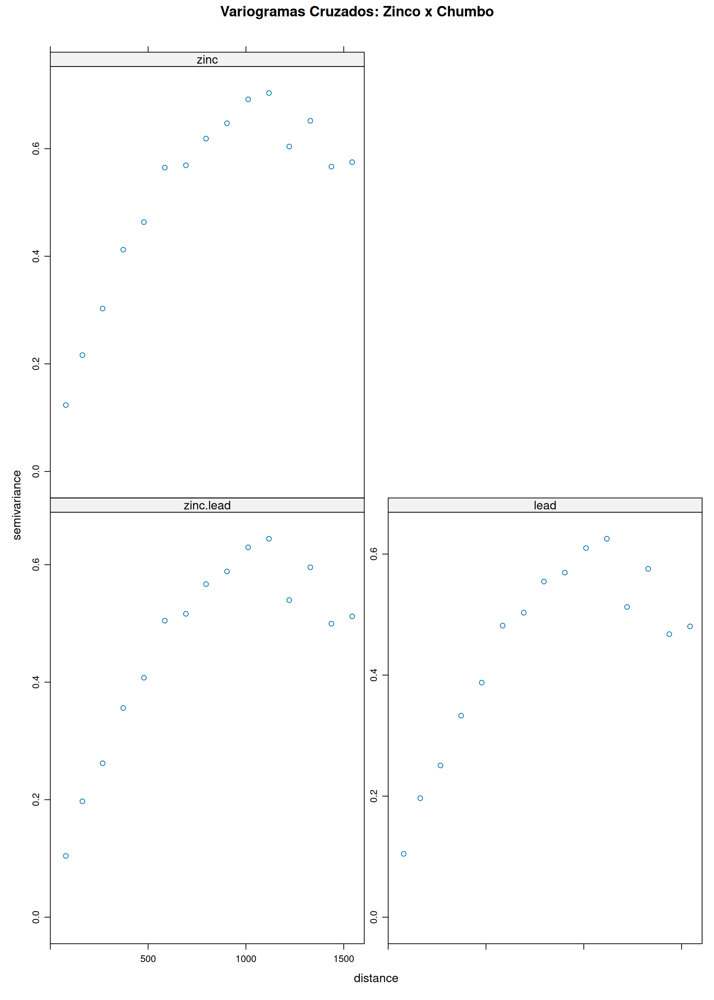
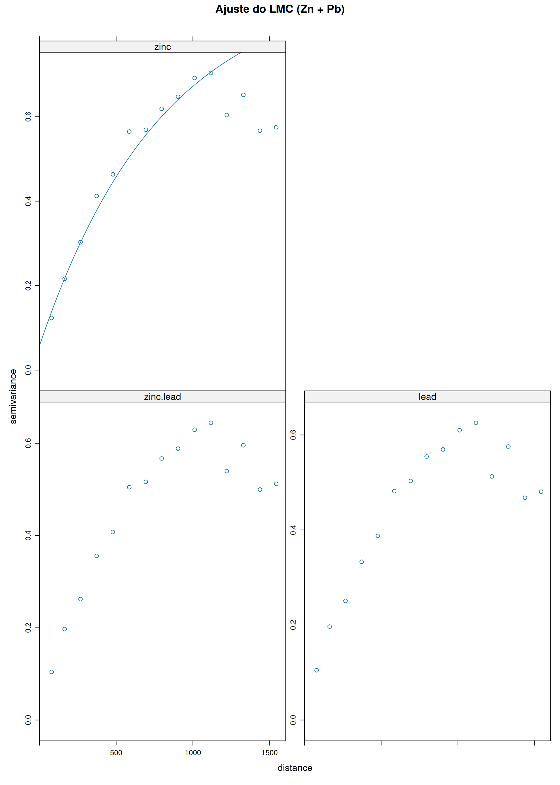
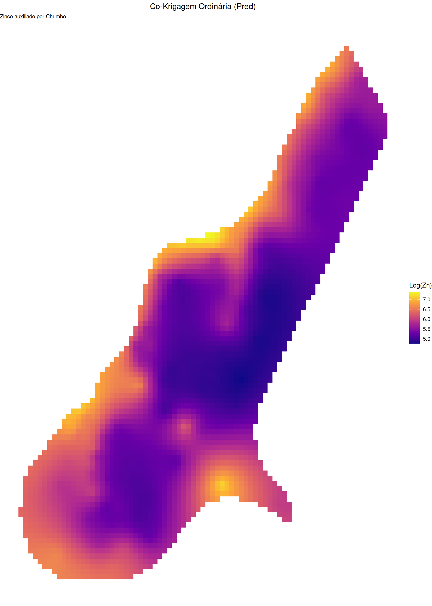
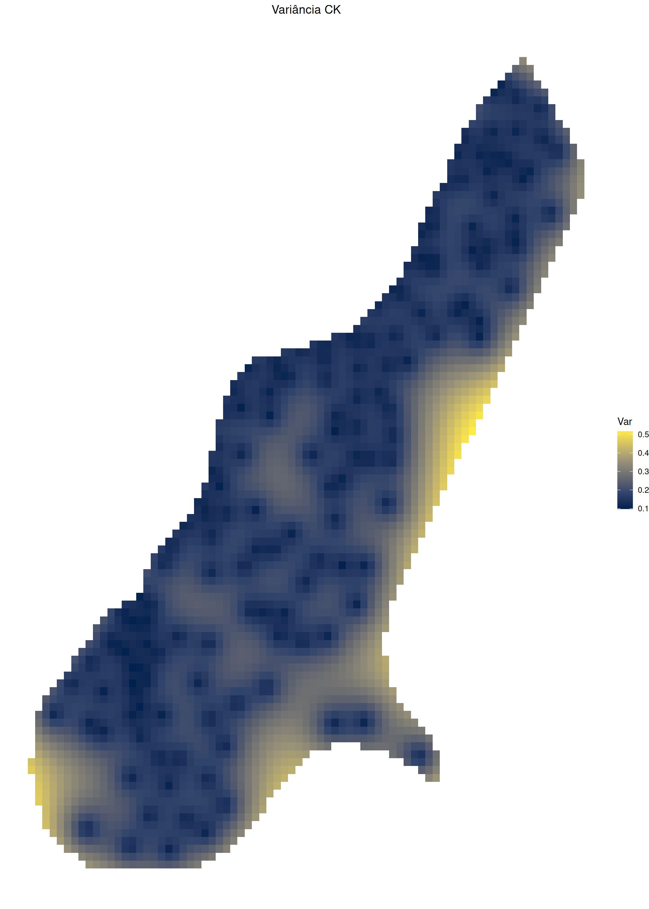
\(\Longrightarrow\) Ver no material de apoio
Objetivo: Verificar se as predições são precisas (acurácia) e se a incerteza (variância de krigagem) está bem calibrada.
\(\Longrightarrow\) Validação Cruzada (Leave-One-Out)
Remove-se o ponto observado \(Y(\mathbf{s}_i)\).
Estima-se \(\hat{Y}_{-i}(\mathbf{s}_i)\) usando os \(n-1\) vizinhos.
Calcula-se o erro e a variância \(\sigma_E^2(\mathbf{s}_i)\).
\(\Longrightarrow\) Resíduos padronizados
Padroniza-se o erro pelo desvio padrão estimado (variância de krigagem).
\[\begin{aligned} \theta_i &= \frac{Y(\mathbf{s}_i) - \hat{Y}_{-i}(\mathbf{s}_i)}{\sigma_k(\mathbf{s}_i)} \\ \theta_i &\sim \mathcal{N}(0, 1) \implies \theta_i^2 \sim \chi^2_{(1)} \\ E[\theta_i^2] &= \text{Var}(\theta_i) + (E[\theta_i])^2 = 1 \end{aligned}\]\(\Longrightarrow\) Razão de Desvio Quadrático Médio (MSDR):
A média dos quadrados dos resíduos padronizados sobre \(n\) pontos:
\[\text{MSDR} = \frac{1}{n} \sum_{i=1}^n \theta_i^2 = \frac{1}{n} \sum_{i=1}^n \frac{[Y(\mathbf{s}_i) - \hat{Y}_{-i}(\mathbf{s}_i)]^2}{\sigma_E^2(\mathbf{s}_i)}\]
\(\text{MSDR} \approx 1\): A variância dos erros reais é compatível com a variância predita.
\(\text{MSDR} > 1\): \(\frac{1}{n}\sum \varepsilon_i^2 > \frac{1}{n}\sum \sigma_E^2\)
\(\text{MSDR} < 1\): \(\frac{1}{n}\sum \varepsilon_i^2 < \frac{1}{n}\sum \sigma_E^2\)
A variância de krigagem é pessimista (maior que o erro efetivo).
Causas: Modelo assume ruído (pepita) superior ao real.
Na Aula 04, veremos a parte prática deste conteúdo. Por favor, leia todo o Capítulo 3, com foco no pacote gstat e na implementação dos diferentes tipos de krigagem no material de apoio.